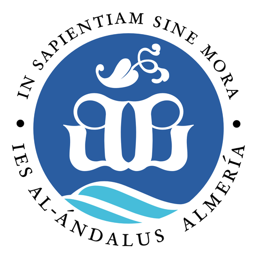

Los puntos del alumnado
Comunidad de Aprendizaje · Curso 2026-2027
Puntos académicos
Los gana el alumnado participando en las actividades de la Comunidad. Sirven para una sola cosa, y es la importante: subir la nota.
Al llegar a la meta se anota +1 en todas las materias en ese trimestreCuántos hacen falta
| 1.º, 2.º, 3.º y 4.º de E.S.O. | 40 puntos |
| 1.º de Bachillerato y 1.º de SMR | 60 puntos |
Lo que sobre al pasar la meta cuenta para el trimestre siguiente.
Dónde se ganan
| Actividad | Cuándo y dónde | El alumnado gana |
|---|---|---|
| Consejo escolarEl alumnado que representa a sus compañeros y compañeras | Cuando se convoca una sesión | 4por sesión |
| Tertulia dialógicaSe lee un fragmento y se comenta entre todos | Miércoles alternos, en el recreo · BibliotecaCada semana que tocan hay copias del fragmento en el hall | 3por sesión |
| Comisión mixtaSe decide junto al profesorado y a las familias | Miércoles alternos, en el recreo · Pasillo de Matemáticas y Lengua (1.ª planta) | 3por sesión |
| Grupo interactivoHaciendo de voluntario o voluntaria en una mesa. Solo Bachillerato y SMR | En las aulas, cuando se convocan | 3cada vez |
| Biblioteca tutorizadaAlumnado que se ayuda entre cursos distintos | Lunes, martes, jueves y viernes, en el recreo · Idiomas 1 (2.ª planta) | 2por sesión |
| Recreos activosLos organizan 1.º de Bachillerato y 1.º de SMR | Lunes, martes, jueves y viernes, en el recreo · Patio del centro, con deportes y juegos de mesa | 2por sesión |
| Biblioteca musicalComo la tutorizada, con instrumentos | Aula de Música | 2por sesión |
¿Hay un máximo de puntos por actividad? Se decidirá según las necesidades del
centro, y quedará claro durante el primer mes de cada trimestre.
Lo que se hace dentro de una materia no da puntos: da nota en esa materia.
Los puntos son para lo que se hace además de la clase.
2.º de Bachillerato y 2.º de SMR: participáis en lo mismo y ganáis la misma
cantidad, pero en puntos comunitarios, que se cambian por recompensas. Están explicados al dorso.
IES Al-Ándalus · Almería
Al dorso: cómo participan las familias